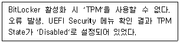
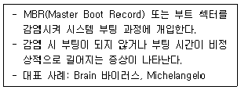
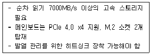
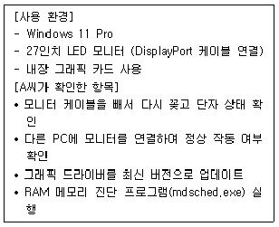
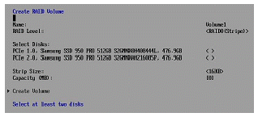
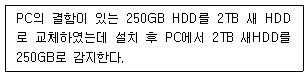
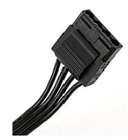
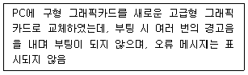
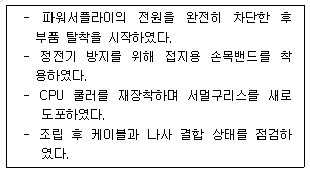

1과목: PC운영체제
1. 금융기관 IT부서 시스템 관리자가 Windows 11 Pro 신규 PC에서 BitLocker 활성화를 시도했다. 다음 상황에서 문제 해결을 위한 조치로 옳은 것은?

2. 프로그램 실행 중 함수 호출 시 복귀 주소와 지역 변수를 저장하는 메모리 영역에서 사용되는 자료 구조에 관한 설명으로 옳은 것은?
3. Windows 11에서 제어판의 '프로그램 및 기능(appwiz.cpl)'을 실행했을 때 수행할 수 없는 작업은?
4. Windows 11에서 네트워크 파일 공유 설정에 관한 설명으로 옳지 않은 것은?
5. Windows 11에서 실행(Win+R) 창에 입력했을 때 실행되지 않는 명령어는?
6. Windows 11 환경에서 지원하는 파일 시스템에 관한 설명으로 옳지 않은 것은?\
7. 기업 사용자가 Windows 11 PC에서 실행 중인 응용 프로그램이 없음에도 시스템이 느려지고 버벅이는 증상을 호소했다. 작업 관리자 확인 결과 CPU 사용률이 지속적으로 100%를 유지하고 있다. CPU 사용률 100% 증상의 원인으로 옳지 않은 것은?
8. Windows 11에서 디스플레이 설정에 관한 설명으로 옳지 않은 것은?
9. Windows 11의 레지스트리에 관한 설명으로 옳지 않은 것은?
10. 다음 중 Windows 11에서 원격 데스크톱(RDP)을 설정할 때 선택해야 하는 Windows 설정 항목으로 옳은 것은?
11. 다음 중 Unix 계열 운영체제 중 폭넓은 이식성이 특징이며 오픈 소스로 배포되는 것으로 옳은 것은?
12. 다음 중 D드라이브에 있는 데이터를 임의의 데이터로 덮어쓰도록 하여 파일 복구가 불가능하도록 만드는 명령 프롬프트 명령어는?
13. 한 사용자가 Windows 11 PC의 전원을 켰으나 부팅이 되지 않아 보안 전문가에게 문의했다. 전문가가 확인한 결과 다음과 같은 특징의 악성코드 감염이 의심되었다. 해당 악성코드의 종류로 옳은 것은?

14. Windows 11에서 네트워크 주소 설정을 확인하고 구성하는 명령어로 옳은 것은?
15. 다음 중 명령 프롬프트에서 PC를 10분 후 자동 종료되도록 하는 명령어는?
2과목: PC주변기기
16. PC 조립 전문점 기술자 한씨가 고객의 4K 영상 편집용 워크스테이션을 구성하고 있다. 다음 상황에서 선택해야 할 스토리지 인터페이스로 옳은 것은?

17. CPU가 주기억 장치로부터 수행할 명령어를 가져와서 명령어 레지스터에 저장하기까지 소요되는 시간은?
18. USB4 인터페이스에 관한 설명으로 옳지 않은 것은?
19. A 직원은 메인보드에 빠른 보조기억장치를 설치하려고 한다. 다음 중 전송 속도 표기로 옳지 않은 것은?
20. 회사 IT 담당자 김씨가 사무실에 네트워크 프린터를 설치하고 있다. 프린터 연결 방식에 관한 설명으로 옳지 않은 것은?
21. DDR4-3200 메모리 모듈(단일 채널 기준)의 이론적 최대 데이터 전송 속도는?
22. PC 수리점 기술자 강씨가 고객의 노트북과 스마트폰을 함께 점검하면서 무선 연결 기능을 테스트하고 있다. Bluetooth 통신에 관한 설명으로 옳지 않은 것은?
23. 다음 중 하나의 무선 마우스를 Windows 11 PC와 Android 스마트폰에 각각 페어링한 후, 물리적 버튼으로 연결 기기를 전환하여 사용하는 기능을 지원하는 Bluetooth 연결 방식은?
24. 다음 중 CISC와 RISC 프로세서에 대한 설명으로 옳지 않은 것은?
25. 경리부에서 이번 분기 프린터 구입에 있어 프린터의 인쇄속도를 비교 중이다. 다음 중 프린터 인쇄속도와 설명으로 옳은 것은?
26. 다음 중 키보드의 접점 방식에 대한 설명으로 옳지 않은 것은?
27. 특정 해상도에서 모니터 화면에 규칙적인 물결 모양의 간섭 무늬가 나타나는 현상은?
28. 다음 중 두 개의 비트맵이 겹칠 때 투명도를 표현해 섞어 보이게 하는 그래픽 기법으로 옳은 것은?
29. 컴퓨터 모니터의 비디오 표준에 대한 정식이름과 디스플레이 해상도(화소)에 대한 설명으로 옳지 않은 것은?
30. 다음 중 RAID 구성 하드디스크 중 하나에 장애가 발생했을 때 복구가 불가능한 시스템은?
3과목: 디지털 논리회로
31. 중견기업에 근무하는 IT 부서 A씨는 영업팀 직원으로부터 "모니터 화면에 색상이 이상하게 나오고 세로로 줄이 생긴다"는 민원을 받았다. A씨는 현장에 방문하여 다음과 같이 점검을 진행하였다. 다음 중 A씨가 확인한 항목에 대한 설명으로 옳지 않은 것은?

32. PC가 부팅할 때, 키보드의 Num Lock, Caps Lock, Scroll Lock의 LED가 한번 깜박거린다. 이것이 의미하는 것으로 옳은 것은?
33. 다음 그림을 참조하여, 셋팅 과정에 대한 설명 중 옳지 않은 것은?

34. 새 PC를 만들고 RAM을 설치하려고 한다. 메인보드에 2개의 채널(Channel A, Channel B)로 구분된 4개의 슬롯이 있는 경우 가장 적절한 RAM 설치 유형은?
35. 다음 문제를 해결하기 위한 가장 적절한 조치 방법은?

4과목: PC유지보수
36. 다음의 작업 관리자 메뉴 중 Windows에서 실행 중인 각 프로세스별로 CPU, 메모리, 디스크, 네트워크 사용량을 개별적으로 확인할 수 있는 메뉴는?
37. 사용자가 피아노 건반을 PC에 연결하려는 경우 피아노 건반과 PC에 연결하기 위해 확인해야 되는 인터페이스는?
38. 다음 중 UEFI 기반 시스템에서의 POST(Power-On Self Test) 과정의 일반적인 실행 순서로 옳은 것은?
39. 다음 중 파워서플라이 4핀(IDE) 커넥터로 장착할 수 없는 장치로 옳지 않은 것은?

40. Over Clocking에 대한 다음 설명 중 옳지 않은 것은?
41. 다음 중 Windows 11 부팅 후 시스템이 갑자기 다운되는 원인에 대한 설명으로 옳지 않은 것은?
42. 다음 문제의 원인일 가능성이 가장 높은 것은?

43. 다음 중 노트북에서 하드디스크(HDD)를 교체할 때 기존 HDD와 반드시 동일해야 하는 것은?
44. 사용자 시스템에 Windows11 OS를 설치하고 있다. 사용자는 설치하는 동안 모든 설정과 파일이 그대로 유지되기를 원한다. 다음 중 사용해야 하는 업그레이드 방법은?
45. Windows 11 환경에서 시스템 엔지니어 Kim은 사용자의 PC가 부팅되지 않아 내부 점검을 진행하였다. 메인보드와 NVMe SSD를 교체하는 과정에서 다음과 같은 조치를 취하였다. 다음 중 Kim의 작업 절차에 대한 설명으로 옳은 것은?

46. 다음 중 Windows에서 하나의 NIC(Network Interface Card) 에 여러 가지 프로토콜을 사용할 수 있게 하는 기능으로 옳은 것은?
47. NetBIOS Protocol의 기능이 아닌 것은?
48. 다음 중 스위칭 방식 중 컷스루(Cut-Through) 방식에 대한 설명으로 옳은 것은?
49. 다음 중 OSI 7계층 모델에서 물리 계층(Physical Layer) 에서 동작하는 장비로 옳은 것은?
50. 다음 중 컴퓨터 간의 LAN(Local Area Network) 과는 달리, 하드디스크 등 외부 저장장치들끼리 고속으로 연결된 통신망으로서 서버마다 개별 디스크를 연결하는 방식보다 저장장치 운용과 관리를 중앙 집중화할 수 있는 것은?
5과목: PC네트워크
51. 정보 보안의 3대 요소라고 볼 수 없는 것은?
52. 다음 중 인터넷의 IP 주소를 사람이 이해하기 쉬운 문자 형태로 표현한 것에 해당하는 것은?
53. 사내 네트워크 전환 프로젝트를 진행 중인 기술기사 A씨는 서버와 클라이언트 PC의 IP 체계를 IPv4에서 IPv6로 이전하고 있다. A씨는 IPv6 적용 시 기존 환경과 달라진 기술적 특징을 검토하고 있다. 다음 중 IPv6의 특징에 대한 설명으로 옳지 않은 것은?
54. 다음 중 SNMP(Simple Network Management Protocol)에 대한 설명으로 옳은 것은?
55. 웹브라우저에서 WWW서비스를 이용하기 위하여 지원해야 하는 프로토콜은?
56. 다음 중 펄스 진폭 변조(PAM)와 펄스 위치 변조(PPM)를 비교한 설명으로 옳지 않은 것은?
57. 다음 중 멀티플렉서에 대한 설명으로 옳은 것은?
58. 다음 중 십진수 145를 BCD(Binary Coded Decimal) 코드로 변환한 값으로 옳은 것은?
59. 시스템 엔지니 Kim은 PC 전원 제어 회로의 출력 논리식이F = (A + B') · (A' + C) 로 구성된 것을 확인하였다. A=1, B=0, C=1일 때 출력 F의 논리값으로 옳은 것은?
60. 다음 중 2진수 10110을 10진수로 변환한 값으로 옳은 것은?